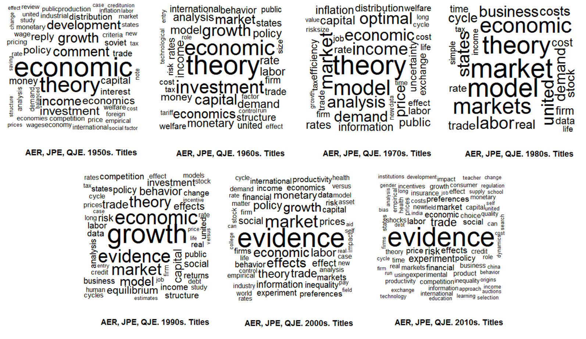
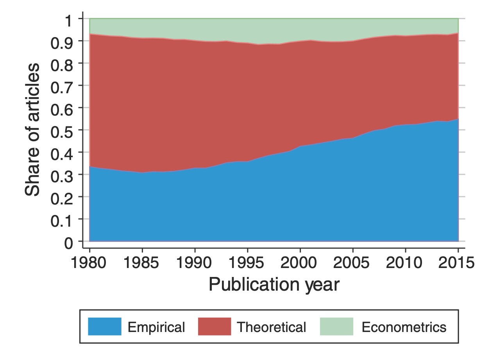
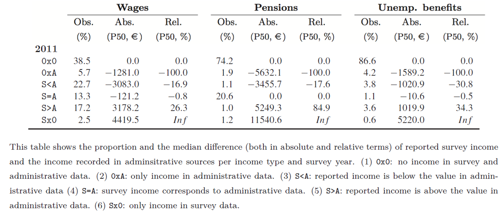
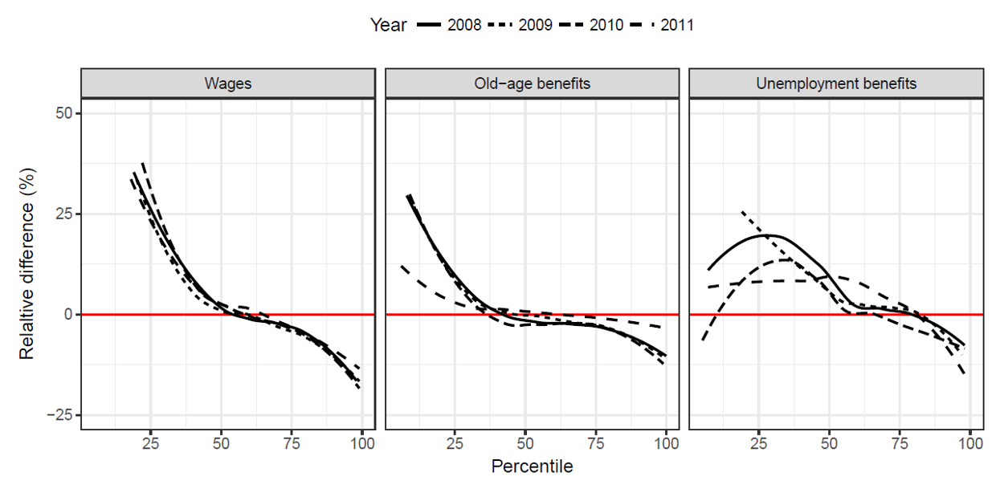
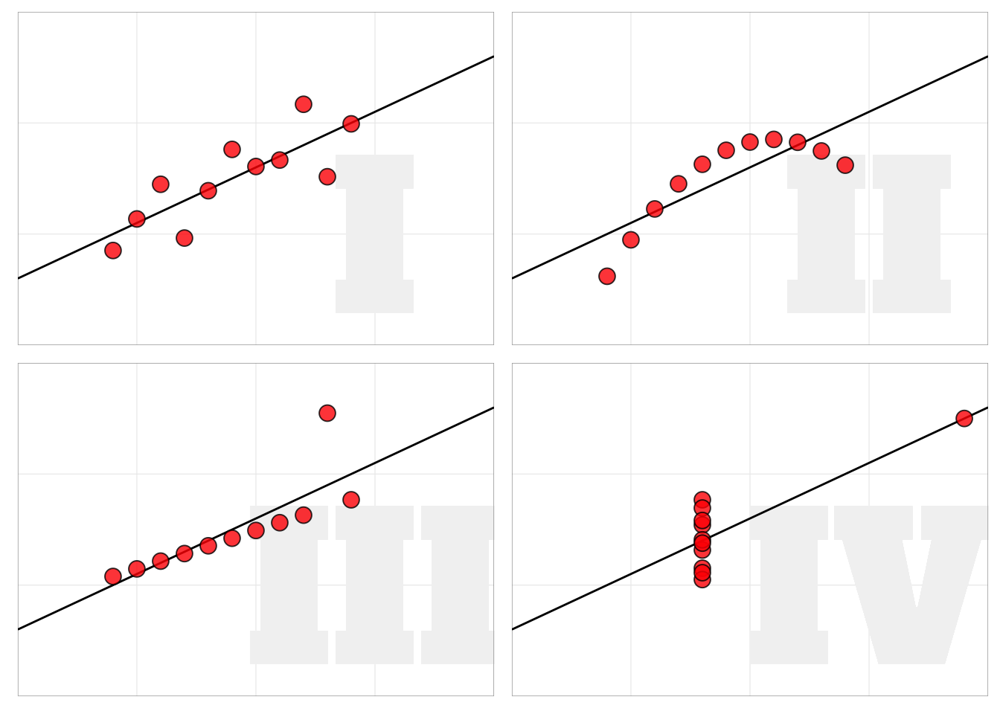
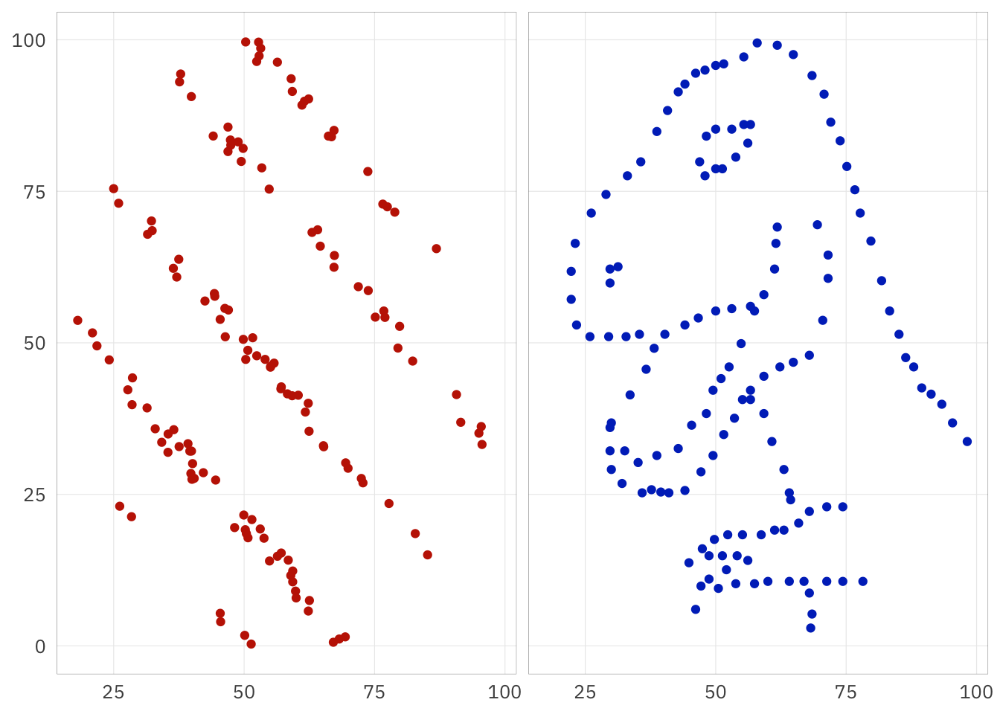
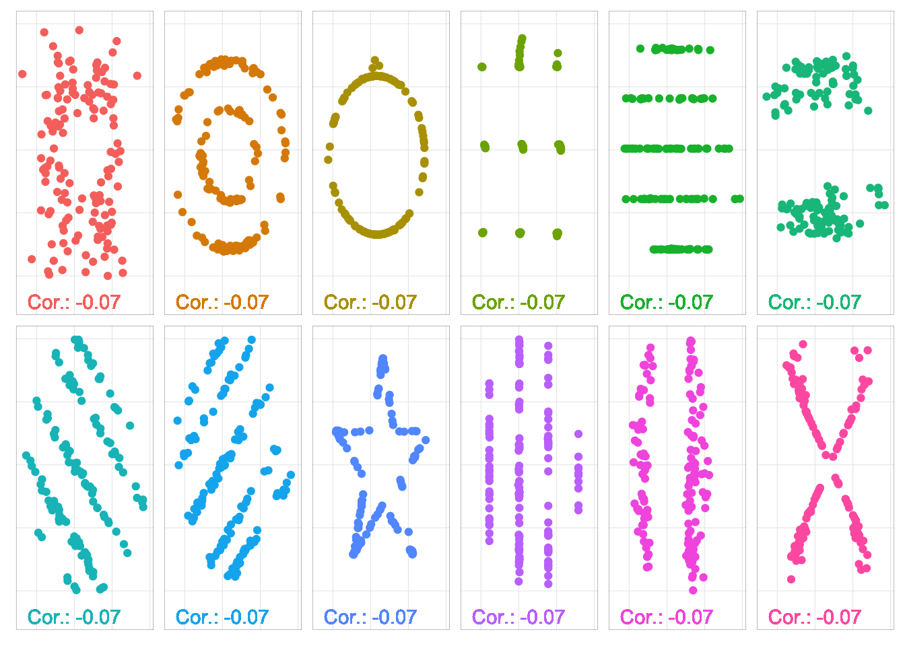

| Obs. | X | Y | X | Y | X | Y | X | Y |
|---|---|---|---|---|---|---|---|---|
| 1 | 10.00 | 8.04 | 10.00 | 9.14 | 10.00 | 7.46 | 8.00 | 6.58 |
| 2 | 8.00 | 6.95 | 8.00 | 8.14 | 8.00 | 6.77 | 8.00 | 5.76 |
| 3 | 13.00 | 7.58 | 13.00 | 8.74 | 13.00 | 12.74 | 8.00 | 7.71 |
| 4 | 9.00 | 8.81 | 9.00 | 8.77 | 9.00 | 7.11 | 8.00 | 8.84 |
| 5 | 11.00 | 8.33 | 11.00 | 9.26 | 11.00 | 7.81 | 8.00 | 8.47 |
| 6 | 14.00 | 9.96 | 14.00 | 8.10 | 14.00 | 8.84 | 8.00 | 7.04 |
| 7 | 6.00 | 7.24 | 6.00 | 6.13 | 6.00 | 6.08 | 8.00 | 5.25 |
| 8 | 4.00 | 4.26 | 4.00 | 3.10 | 4.00 | 5.39 | 19.00 | 12.50 |
| 9 | 12.00 | 10.84 | 12.00 | 9.13 | 12.00 | 8.15 | 8.00 | 5.56 |
| 10 | 7.00 | 4.82 | 7.00 | 7.26 | 7.00 | 6.42 | 8.00 | 7.91 |
| 11 | 5.00 | 5.68 | 5.00 | 4.74 | 5.00 | 5.73 | 8.00 | 6.89 |
| Mean | 9.00 | 7.50 | 9.00 | 7.50 | 9.00 | 7.50 | 9.00 | 7.50 |
| SD | 3.32 | 2.03 | 3.32 | 2.03 | 3.32 | 2.03 | 3.32 | 2.03 |
| Corr | 0.82 | 0.82 | 0.82 | 0.82 |
Economic Policy Visualization
Data
The era of evidence in economics

The figure shows the evolution of economics literature by text mining the 500 most-cited titles in top journals by decade. There is a shift from advancing theory towards empirical evidence.
Source: Brice/Montesinos-Yufa (2019)
The rise of empirical articles
|  | There is a distinct rise of empirical papers in economics. In the 1980s, around one third of publications was empirical. Today, it’s more than half. This trend is present in all sub-fields of the discipline (labor, finance, macro, etc.). The analyis is based on 134,892 papers published in 80 journals between 1980 and 2015. Papers are labeled as empirical if they use data to estimate economically meaningful parameters. |
Source: Angrist et al. (2017)
Evidence-based economic policy
- Data collection: Collection of relevant and high-quality data (administrative data, surveys, interviews, observations, etc.). Researchers should be aware of the qualities but also of the flaws of the data.
- Data analysis: The design and type of analysis depends on the question being asked and resources available. The methods range from qualitative to quantitative analysis. The choice of application might unwittingly involve normative reflections by the researcher.
- Policy suggestions: A major goal of empirical economics is to serve and improve policy making. The findings should, however, be carefully interpreted with regard to the limitations of empirical analyis. Economic policy, even if it’s evidence-based, is affected by norms, beliefs, etc.
Mind the (data) gap!
The limits of data

- Data is never a perfect reflection of the world!
- It’s only a subset: not crime but reported crime
- Information is collected by humans and processed by machines: imprecisions and errors are inevitable!
- Be aware of potential (cognitive and statistical) biases!
Source: XKCD
Invisible women
 |
Caroline Criado Perez Exposing Data Bias in a World Designed for Men Random House Uk ISBN: 978-1-78470-628-9 The world we live in is built around male data, preferences, and assumptions. There are numerous examples of how the gender data gap has led to women being overlooked and undervalued in areas ranging from medicine to urban planning. To create a more just and equal society, we need to take into account the different experiences and needs of women and other marginalized groups in our data collection and decision-making processes. |
Invisible rich
 |
Survey data are based on representative samples drawn from total population. However, the probability of drawing one of the few very rich households into the sample is infinitesimal. Moreover, participation in surveys is mostly voluntary and there is a higher refusal rate at the top. This poor coverage of the top in wealth and income surveys conceals the extent of inequality. The figure shows the gap between the richest observation in wealth survey data (HFCS) and the “poorest” observation in national rich lists created by magazines. |
Source: Disslbacher et al. (2020)
Discuss with your neighbour
What other potential flaws and challenges of data collection come to your mind?
How could these flaws be tackled by the researcher?


From conceptual disparities to data
Income according to Canberra Group
| ID | Concept | Aggregate |
|---|---|---|
| 1 | Income from employment | 1a + 1b |
| 1a | Employee income | |
| 1b | Income from self-employment | |
| 2 | Property income | |
| 3 | Income from household production | |
| 4 | Current transfers received | |
| 5 | Income from production | 1 + 3 |
| 6 | Primary income | 1 + 2 + 3 |
| 7 | Current transfers paid (taxes, fees, etc.) | |
| 8 | Disposable income | 6 + 4 - 7 |
Source: United Nations (2011), 11
Income according to the National Accounts
| ID | Concept |
|---|---|
| D.1 | Compensation of employees |
| D.11 | Wages and salaries |
| D.12 | Employers social contributions |
| B.2G | Operating surplus, gross |
| B.3G | Mixed income, gross |
| D.4 | Property income |
| D.41 | Interest |
| D.42 | Distributed income of corporations |
| D.43 | Reinvested earnings on foreign direct investment |
| D.44 | Investment income disbursements (e.g. insurances) |
| D.45 | Rent |
Income according to the Austrian tax law
| ID | Concept | Description |
|---|---|---|
| 1 | Income from agriculture and forestry | Farmers, forest managers |
| 2 | Income from self-employment | E.g. Freelancers, Architects, Lawyer, Doctors, Consultants, CEO if she holds > 25% |
| 3 | Business income | All other self-employed activities |
| 4 | Employee income | Employees, retirees |
| 5 | Renting and lease of land | Particularly renting of real estate properties |
| 6 | Property income | Savings accounts, dividends (final taxation with capital income tax) |
| 7 | Other income | Income from speculation, income from selling private property, etc. |
Income data sources in Austria
| Income Type | Aggregate time series | Long-term distribution | Short-term distribution |
|---|---|---|---|
| Employee income | WTD SSD | WTD SSD | WTD SSD SES EU-SILC HFCS |
| Self-employed | ITD (IWITD) | ITD (IWITD) EU-SILC HFCS | |
| Property income | CGT (ITD) | EU-SILC HFCS | |
| Transfers | Various admin. sources | EU-SILC HFCS | |
| Disposable household income | SNA | HBS EU-SILC HFCS |
Administrative and survey data sources: Wage tax data (WTD), Income tax data (ITD), Integrated wage and income tax data (IWITD), Social security data (SSD), Capital gains tax data (CGT), System of National Accounts (SNA), European Survey of Income and Living Conditions (EU-SILC), Household Finance and Consumption Survey (HFCS), Household Budgetary Survey (HBS), Structure of Earnings Survey (SES)
Be aware of differences between data sources!
Income data in EU-SILC
Individual level:
- employee cash or near cash income
- cash benefits or losses from self-employment
- pension from individual private plans
- unemployment benefits
- old-age benefits
- survivor benefits
- sickness benefits
- disability benefits
- education-related allowances
Household level:
- income from rental of a property or land
- family/children related allowances
- social exclusion not elsewhere classified
- housing allowances
- regular inter-household cash transfers received
- alimonies received
- interest, dividends, profit from capital investments in incorporated business
- income received by people aged under 16
Note: Variables that use administrative data are highlighted.
Administrative versus survey data

Impact on response behavior:
- Social desirability
- Sociodemographic characteristics
- Survey design
- Learning effect
Source: Angel et al. (2019)
Mean reverting errors

Source: Angel et al. (2019)
How do we explain the mismatch?

Source: Angel et al. (2019)
Why should we plot data?
Anscombe’s quartet
What do we learn when plotting the data?
`geom_smooth()` using formula = 'y ~ x'
Do you see correlation?

. . .
Correlation: -0.07
Correlation: -0.07
Same same but different

Let’s start coding with the penguins

The Palmer Penguins


The data was collected from 2007-2009 by Dr. Kristen Gorman with the Palmer Station Long Term Ecological Research Program. The dataset contains data for 344 penguins. There are 3 different species of penguins, collected from 3 islands in the Palmer Archipelago, Antarctica.
Source: Gorman et al. (2014)
Bibliography
References
Angel, Stefan/Disslbacher, Franziska/Humer, Stefan/Schnetzer, Matthias (2019). What did you really earn last year?: Explaining measurement error in survey income data. Journal of the Royal Statistical Society: Series A (Statistics in Society). DOI: 10.1111/rssa.12463
Angrist, Joshua/Azoulay, Pierre/Ellison, Glenn/Hill, Ryan/Lu, Susan Feng (2017). Economic research evolves: Fields and styles. American Economic Review, 107(5), 293–297. DOI: 10.1257/aer.p20171117
Brice, Brandon D./Montesinos-Yufa, Hugo M. (2019). The era of empirical evidence. Mimeo.
Disslbacher, Franziska/Ertl, Michael/List, Emanuel/Mokre, Patrick/Schnetzer, Matthias (2020). On top of the top - adjusting wealth distributions using national rich lists (Working Paper Series No. 20). INEQ.
Gorman, Kristen B./Williams, Tony D./Fraser, William R. (2014). Ecological sexual dimorphism and environmental variability within a community of antarctic penguins (genus pygoscelis). PLoS ONE, 9(3), e90081. DOI: 10.1371/journal.pone.0090081
United Nations (2011). Canberra group handbook on household income statistics (2nd ed.). Geneva: United Nations.